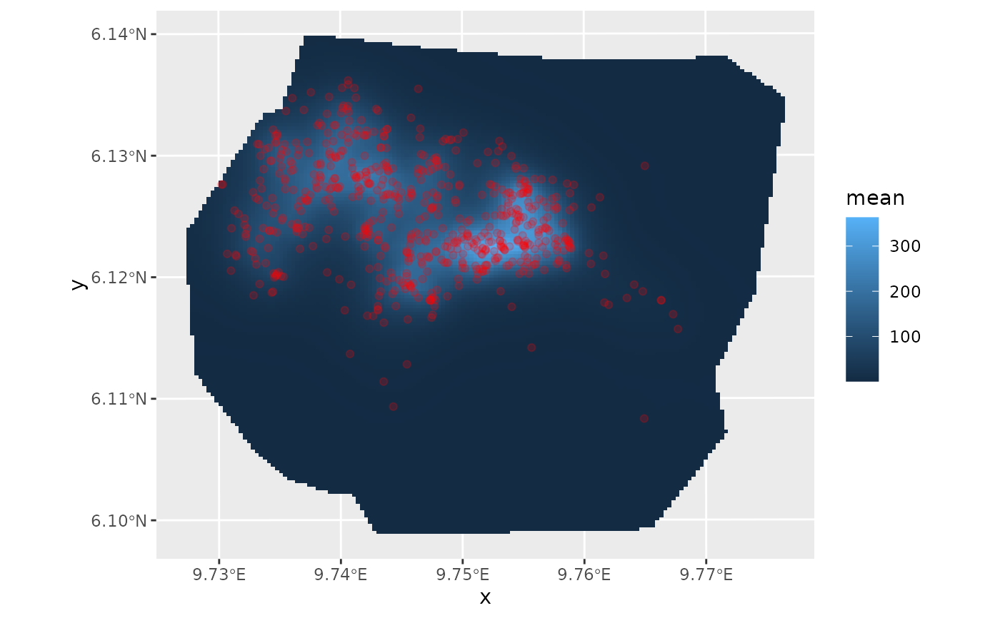

This function performs inference on a LGCP observed via points residing possibly multiple dimensions. These dimensions are defined via the left hand side of the formula provided via the model parameter. The left hand side determines the intensity function that is assumed to drive the LGCP. This may include effects that lead to a thinning (filtering) of the point process. By default, the log intensity is assumed to be a linear combination of the effects defined by the formula's RHS.
More sophisticated models, e.g. non-linear thinning, can be achieved by using the predictor argument. The latter requires multiple runs of INLA for improving the required approximation of the predictor. In many applications the LGCP is only observed through subsets of the dimensions the process is living in. For example, spatial point realizations may only be known in sub-areas of the modelled space. These observed subsets of the LGCP domain are called samplers and can be provided via the respective parameter. If samplers is NULL it is assumed that all of the LGCP's dimensions have been observed completely.
Usage
lgcp(
components,
data,
domain = NULL,
samplers = NULL,
ips = NULL,
formula = . ~ .,
E = NULL,
weights = NULL,
...,
options = list(),
.envir = parent.frame()
)Arguments
- components
Latent component definitions, either as a
bru_comp_list()object, or aformula-like specification. Also used to define a default linear additive predictor. Seebru_comp()for details.- data
Predictor expression-specific data, as a
data.frame,tibble, orsf. Since2.12.0.9023, deprecated support forSpatialPoints[DataFrame]objects.- domain, samplers, ips
Arguments used for
family="cp"andaggregate=.domainNamed list of domain definitions, see
fmesher::fm_int().samplersIntegration domain for
family="cp"or subdomains foraggregate=, seefmesher::fm_int().ipsIntegration points. Defaults to fmesher::fm_int
(domain, samplers). If explicitly given, overridesdomainandsamplers.fmesher::new_fm_int()(from fmesher0.5.0.9013) can be used for manually constructed integration schemes.
- formula
a
formulawhere the right hand side is a general R expression defines the predictor used in the model.- E
Exposure/effort parameter for family = 'poisson' passed on to
INLA::inla. Special case if family is 'cp': rescale all integration weights by a scalarE. For sampler specific reweighting/effort, use aweightcolumn in thesamplersobject instead, seefmesher::fm_int(). Default taken fromoptions$E, normally1.- weights
Fixed (optional) weights parameters of the likelihood, so the log-likelihood
[i]is changed intoweights[i] * log_likelihood[i]. Default value is1. WARNING: The normalizing constant for the likelihood is NOT recomputed, so ALL marginals (and the marginal likelihood) must be interpreted with great care.For
family = "cp", the weights are applied assum(weights * eta)in the point location contribution part of the log-likelihood, whereetais the linear predictor, and do not affect the integration part of the likelihood. This can be used to implement approximative methods for point location uncertainty.- ...
Further arguments passed on to
bru_obs().- options
A bru_options options object or a list of options passed on to
bru_options()- .envir
The evaluation environment to use for special arguments (
E,Ntrials,weights, andscale) if not found inresponse_dataordata. Defaults to the calling environment.
Value
An bru() object
Details
The E and weights arguments are evaluated in the data context, like for
bru_obs().
Examples
# \donttest{
if (bru_safe_inla() &&
require(ggplot2, quietly = TRUE) &&
require(fmesher, quietly = TRUE) &&
requireNamespace("sn", quietly = TRUE)) {
# Load the Gorilla data
data <- gorillas_sf
# Plot the Gorilla nests, the mesh and the survey boundary
ggplot() +
fmesher::geom_fm(data = data$mesh) +
gg(data$boundary, fill = "blue", alpha = 0.2) +
gg(data$nests, col = "red", alpha = 0.2)
# Define SPDE prior
matern <- INLA::inla.spde2.pcmatern(
data$mesh,
prior.sigma = c(0.1, 0.01),
prior.range = c(0.1, 0.01)
)
# Define domain of the LGCP as well as the model components (spatial SPDE
# effect and Intercept)
cmp <- geometry ~ field(geometry, model = matern) + Intercept(1)
# Fit the model (with int.strategy="eb" to make the example take less time)
fit <- lgcp(cmp, data$nests,
samplers = data$boundary,
domain = list(geometry = data$mesh),
options = list(control.inla = list(int.strategy = "eb"))
)
# Predict the spatial intensity surface
lambda <- predict(
fit,
fmesher::fm_pixels(data$mesh, mask = data$boundary),
~ exp(field + Intercept)
)
# Plot the intensity
ggplot() +
gg(lambda, geom = "tile") +
gg(data$nests, col = "red", alpha = 0.2)
}

# }